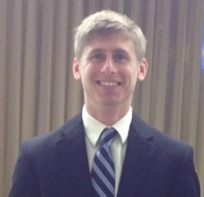

adam
johns I am a recent Computer Engineering graduate of Mississippi State University (MSU) currently seeking software engineering employment. It was through my coursework at MSU that I discovered my passion for software development. The idea of being able to solve complex problems through writing code is very appealing to me. I especially enjoy interface design to simplify user experiences with technology.
In my spare time, I like to work on various software projects to learn as much as possible about useful technologies, and also to try to create a product that I would enjoy to use. Aside from software development, I also have a passion for learning. There is an abundance of knowledge in the world, and I want to absorb as much of it as I can in my spare time.
I also enjoy some recreational activities in my spare time. I loved intramural sports while I was at MSU, and I usually had a team for dodgeball, wiffleball, softball, basketball, and volleyball. I also enjoy playing disc golf, because it is a fun and cheap way to enjoy the outdoors while having friendly competitions with friends.